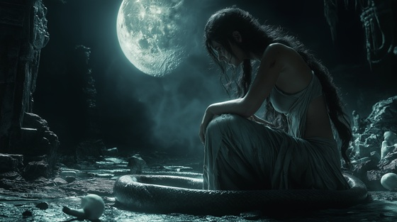

Lamia was once a queen of Libya, loved by Zeus. When Hera discovered the affair, she cursed Lamia to lose her children—and, in some versions, forced her to devour them herself. Driven mad by grief, Lamia became a monstrous figure of nightmare, forever mourning what she had lost.
In Greek mythology, Lamia represents the corruption of innocence by divine cruelty. She is a symbol of sorrow turned savage, of love curdled into monstrosity.
This song gives her voice—a lullaby for children she can never hold again, and for a humanity twisted by the gods' jealous games.
The Monster’s Lullaby
I wore a crown, I bore the light
Till gods betrayed the mortal night
She cursed my womb, she cursed my breath—
And filled my arms with songs of death
No cradle now, no dream remains—
Just empty hands and poisoned veins
Monster’s lullaby, broken sigh
I rock the bones where children lie
A serpent’s kiss, a mother’s grave—
I sing of all I could not save
She tore the stars from out my bed
She wrung the sun from overhead
I weep with fangs, I cry with claws—
The queen devoured by heaven's laws
No face remains, no beauty stays—
Where curses coil and hearts decay
Monster’s lullaby, broken sigh
I rock the bones where children lie
A serpent’s kiss, a mother’s grave—
I sing of all I could not save
And though I crawl, and though I scream
I dream of hands I’ll never clean
Each stolen child, each stolen cry—
Becomes my voice, becomes my sky
LAMIA: “You called me monster... but it was you who fed me grief.”
Monster’s lullaby, broken sigh
A mother scorned beneath the sky
A crown of teeth, a kiss of graves—
I sing for all I could not save
Sleep, my children... sleep through the pain...
Your names are stars within my chain